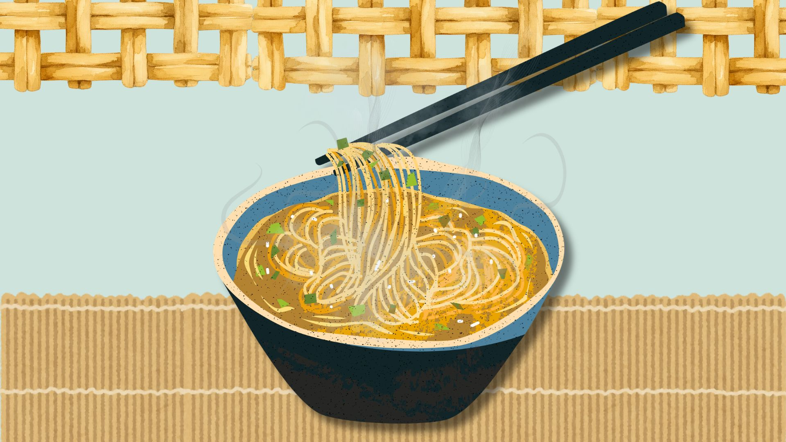
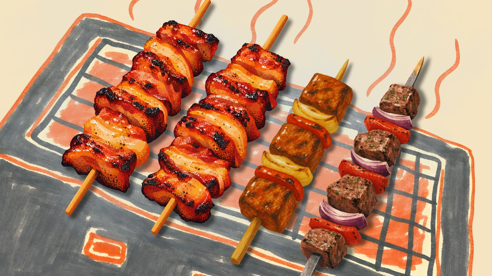
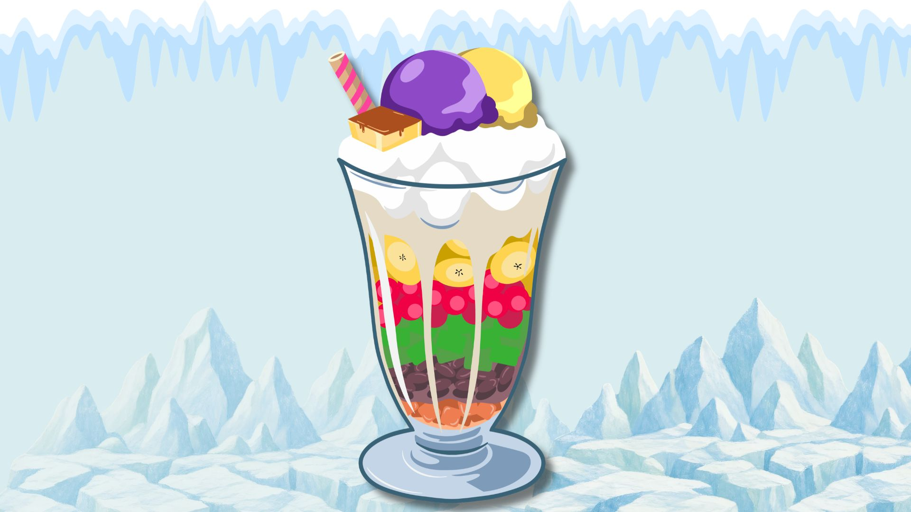

Stop 1: Lola's Noodle Corner
A hot, peppery noodle soup served from a single pot since early morning.
Three stops, planned in the order we recommend eating them.

A hot, peppery noodle soup served from a single pot since early morning.

Smoky skewers brushed with sweet soy glaze, grilled to order after sunset.

Shaved ice layered with fruit syrup, the best way to end a long walk.
Most stalls take cash only.
Street stalls close early when it rains.